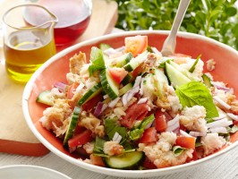
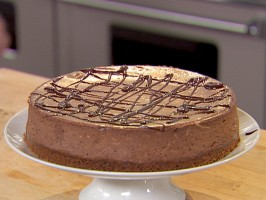
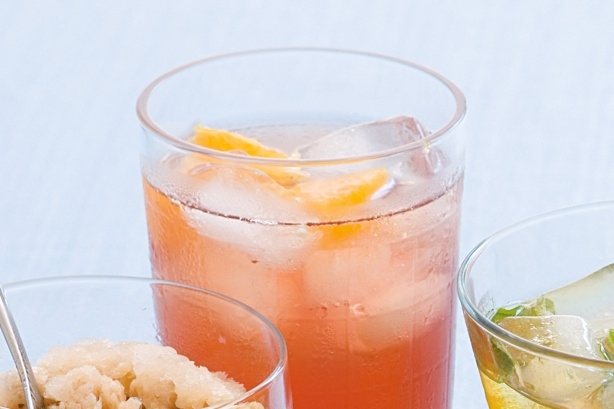

Recipes

3 Main Resipes
Panzanella/strong

INGREDIENTS
- 8 ounces stale bread (3 to 4 days old), sliced*
- Cold water, as needed
- 4 vine-ripened tomatoes or Romatomatoes, chopped
- 1 small red onion, chopped medium fine
- 1 European cucumber, halved and sliced into half moons
- 4 vine-ripened tomatoes or Romatomatoes, chopped
- 2 handfuls fresh basil
- Extra-virgin olive oil
Chocolate Espresso Cheesecake with Ganache

INGREDIENTS
- 5 ounces bittersweet chocolate
- 1 tablespoon instant espresso coffee
- 1 3/4 pounds cream cheese, at room temperature
- 1 cup granulated sugar
- 1/4 cup cornstarch
- 1 teaspoon pure vanilla extract
- 1/4 teaspoon almond extract
- 1/2 cup sour cream, at room temperature
Cool orange rosehip tea

INGREDIENTS
- 1 small orange
- 3 rosehip tea bags
- 1 whole vanilla bean
- 5 cups boiling water
- 2 tablespoons honey
- ice cubes, to serve